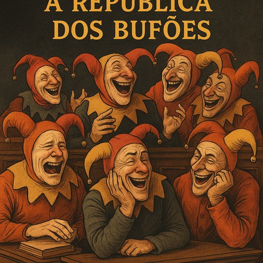

Publicado em 2025-07-01 14:50:19
Por Augustus Veritas | 25 de Junho de 2025
Portugal, outrora terra de poetas, navegadores e sonhadores, tornou-se nos dias de hoje um palco tragicómico onde os bufões usurpam o centro da cena. Sim, bufões. Esses personagens pitorescos que se multiplicam pelos corredores do poder, entre gabinetes ministeriais e comissões parlamentares, balbuciando promessas ocas e gargalhadas nervosas para disfarçar a incompetência.
Vivemos numa república onde as palavras “transparência” e “responsabilidade” são pronunciadas com a mesma seriedade com que se anuncia o fim do mundo numa telenovela. Onde o nepotismo é tão normalizado que já pedem cartão de familiar em vez de cartão de cidadão. E onde a justiça anda de galochas na lama processual, a tentar equilibrar-se entre pareceres, recursos e prescrições convenientes.
Temos um primeiro-ministro que passa empresas para os filhos como quem passa o comando da televisão, um ex-primeiro que nada em milhões sem se molhar e uma oposição tão entusiasmante como uma tarde de domingo sem internet. Os debates no parlamento mais parecem sketches de comédia de improviso, onde o improviso é mau e a comédia é involuntária.
Mas o povo — esse sim — ainda ri. Rimos para não chorar. Criamos memes, fazemos piadas nas redes sociais e suportamos a farsa com a resiliência de quem já viu muito e espera pouco. É essa a nossa maior tragédia e, ao mesmo tempo, o nosso milagre quotidiano: o riso como mecanismo de sobrevivência.
Na República dos Bufões, a sátira não é uma escolha. É um serviço público.